# HIDE CODE
import os
import sys
import h5py
import pickle
import numpy as np
import pandas as pd
from os.path import join as pjoin
from copy import deepcopy as dc
from tqdm.notebook import tqdm
from collections import Counter
import matplotlib.pyplot as plt
import seaborn as sns
sns.set_style('white')
github_path = pjoin(os.environ['HOME'], 'Dropbox/git/A1ToneDiscrimination/')
sys.path.insert(0, github_path)
from utils.process import *
from utils.generic_utils import *
from utils.plot_functions import *
dirs_dict = get_dirs()
# df_all = pd.read_pickle(dirs_dict['df_load_file'])
# output_trial, output_freq = bag_of_trajectories(dirs_dict['h_load_file'])
# name = "scabbers_2016-09-23"
target_dffs, nontarget_dffs = {}, {}
target_labels, nontarget_labels = {}, {}
f = h5py.File(dirs_dict['h_load_file'], 'r')
for name in f:
behavior = f[name]['behavior']
passive = f[name]['passive']
good_cells_b = np.array(behavior["good_cells"], dtype=int)
good_cells_p = np.array(passive["good_cells"], dtype=int)
good_cells = set(good_cells_b).intersection(set(good_cells_p))
good_cells = sorted(list(good_cells))
dff = np.array(behavior['dff'], dtype=float)[..., good_cells]
nt, ntrials, nc = dff.shape
trial_info = {}
for k, v in behavior["trial_info"].items():
trial_info[k] = np.array(v, dtype=int)
target_indxs = np.where(trial_info['target'])[0]
nontarget_indxs = np.where(trial_info['nontarget'])[0]
target_dffs[name] = dff[:, target_indxs, :]
nontarget_dffs[name] = dff[:, nontarget_indxs, :]
target_labels[name] = trial_info['hit'][target_indxs]
nontarget_labels[name] = trial_info['correctreject'][nontarget_indxs]
min_num_samples = 100
for key, val in target_dffs.items():
if val.shape[1] >= min_num_samples:
print(key, val.shape)
scabbers_2016-08-31 (135, 100, 67)
scabbers_2016-09-07 (135, 124, 65)
scabbers_2016-09-22 (135, 133, 73)
scabbers_2016-09-23 (135, 110, 62)
scabbers_2016-09-28 (135, 134, 52)
rng = np.random.RandomState(42)
min_num_samples = 100
xv_folds = 10
timepoint = 45
train_data, test_data = {}, {}
train_labels, test_labels = {}, {}
for key, val in target_dffs.items():
x = val[timepoint]
num_samples = len(x)
if num_samples < min_num_samples:
continue
labels = target_labels[key][:min_num_samples]
pos_indxs = np.where(labels == 0)[0]
neg_indxs = np.where(labels == 1)[0]
pos_tst_indxs = rng.choice(pos_indxs, size=int(np.ceil(len(pos_indxs)/xv_folds)), replace=False)
neg_tst_indxs = rng.choice(neg_indxs, size=int(np.ceil(len(neg_indxs)/xv_folds)), replace=False)
tst_indxs = np.concatenate([pos_tst_indxs, neg_tst_indxs])
# tst_indxs = rng.choice(range(min_num_samples), size=min_num_samples//10, replace=False)
trn_indxs = np.delete(range(min_num_samples), tst_indxs)
assert not set(tst_indxs).intersection(set(trn_indxs))
test_data[key] = x[tst_indxs]
train_data[key] = x[trn_indxs]
test_labels[key] = target_labels[key][tst_indxs]
train_labels[key] = target_labels[key][trn_indxs]
[v.shape for v in train_data.values()]
[(89, 67), (89, 65), (89, 73), (89, 62), (89, 52)]
[v.shape for v in train_labels.values()]
[(89,), (89,), (89,), (89,), (89,)]
import rcca
cca = rcca.CCA(kernelcca=True, ktype='linear', reg=1000.0, numCC=256)
cca.train(list(train_data.values()))
Training CCA, kernel = linear, regularization = 1000.0000, 256 components
<rcca.CCA at 0x7f22473b1490>
testcorrs = cca.validate(list(test_data.values()))
x_trn = [x @ w for x, w in zip(train_data.values(), cca.ws)]
x_tst = [x @ w for x, w in zip(test_data.values(), cca.ws)]
x_trn, x_tst = tuple(map(np.concatenate, [x_trn, x_tst]))
x_trn.shape, x_tst.shape
((445, 256), (55, 256))
plt.scatter(x_trn[:, 0], x_trn[:, 5])
plt.scatter(x_tst[:, 0], x_tst[:, 5])
plt.show()

y_trn = [item for item in train_labels.values()]
y_tst = [item for item in test_labels.values()]
y_trn, y_tst = tuple(map(np.concatenate, [y_trn, y_tst]))
y_trn.shape, y_tst.shape
((445,), (55,))
from sklearn.metrics import matthews_corrcoef, balanced_accuracy_score
from sklearn.linear_model import LogisticRegression
results = []
for c in range(256):
frange = range(c, c+1)
clf = LogisticRegression(
#penalty='l1',
#C=10,
#solver='liblinear',
random_state=42,
).fit(x_trn[:, frange], y_trn)
y_pred = clf.predict(x_tst[:, frange])
balacc = balanced_accuracy_score(y_tst, y_pred)
mcc = matthews_corrcoef(y_tst, y_pred)
results.append(mcc)
plt.plot(results)
[<matplotlib.lines.Line2D at 0x7f22417d8e80>]
np.argsort(results)[::-1]
array([166, 156, 162, 203, 174, 98, 163, 170, 126, 4, 88, 121, 115,
198, 230, 125, 81, 222, 120, 211, 233, 61, 184, 155, 180, 106,
97, 195, 28, 172, 204, 201, 129, 199, 196, 138, 52, 109, 215,
134, 218, 70, 77, 15, 54, 175, 84, 40, 35, 157, 190, 128,
99, 192, 131, 132, 118, 135, 200, 137, 56, 224, 152, 69, 92,
39, 188, 197, 229, 158, 103, 213, 167, 31, 87, 90, 181, 60,
248, 182, 33, 249, 19, 146, 119, 153, 104, 32, 124, 127, 207,
208, 217, 243, 246, 232, 78, 14, 91, 173, 242, 122, 185, 234,
227, 165, 237, 238, 41, 3, 2, 0, 140, 253, 216, 171, 1,
74, 245, 9, 12, 151, 252, 254, 107, 46, 241, 219, 147, 221,
179, 250, 63, 235, 53, 85, 111, 144, 117, 105, 194, 94, 169,
11, 191, 154, 228, 42, 239, 139, 187, 247, 251, 20, 159, 37,
231, 47, 133, 62, 223, 57, 7, 10, 13, 64, 66, 8, 67,
68, 225, 29, 48, 5, 30, 45, 43, 22, 24, 26, 38, 27,
36, 244, 143, 71, 255, 210, 183, 161, 72, 100, 93, 150, 206,
86, 177, 83, 82, 209, 212, 79, 141, 80, 123, 240, 65, 73,
226, 205, 108, 186, 76, 110, 130, 95, 160, 50, 58, 21, 44,
51, 236, 23, 17, 168, 89, 59, 136, 148, 16, 75, 164, 25,
49, 114, 101, 113, 176, 145, 34, 18, 102, 193, 214, 202, 189,
96, 6, 55, 142, 116, 112, 149, 220, 178])
best_dims = [166, 156, 162, 203, 174, 98, 163, 170, 126, 4, 88, 121, 115,
198, 230, 125, 81, 222, 120, 211, 233, 61, 184, 155, 180, 106]
results = []
for dim in best_dims:
frange = range(dim, dim+1)
clf = LogisticRegression(
#penalty='l1',
#C=10,
#solver='liblinear',
random_state=42,
).fit(x_trn[:, frange], y_trn)
y_pred = clf.predict(x_tst[:, frange])
balacc = balanced_accuracy_score(y_tst, y_pred)
mcc = matthews_corrcoef(y_tst, y_pred)
results.append(mcc)
plt.plot(results)
[<matplotlib.lines.Line2D at 0x7f2241742520>]
clf = LogisticRegression(
penalty='l1',
C=0.01,
solver='liblinear',
max_iter=1000,
random_state=42,
).fit(x_trn[:, best_dims], y_trn)
y_pred = clf.predict(x_tst[:, best_dims])
balacc = balanced_accuracy_score(y_tst, y_pred)
mcc = matthews_corrcoef(y_tst, y_pred)
balacc, mcc
(0.7318548387096775, 0.4780613210960605)
import warnings
warnings.filterwarnings('ignore', category=RuntimeWarning)
x_trn.shape
(445, 256)
results = pd.DataFrame()
for n_components in tqdm(range(1, 100)):
cca = rcca.CCA(reg=1., numCC=n_components, verbose=False)
cca.train(list(train_data.values()))
ev = cca.compute_ev(list(test_data.values()))
x_trn = [x @ w for x, w in zip(train_data.values(), cca.ws)]
x_tst = [x @ w for x, w in zip(test_data.values(), cca.ws)]
y_trn = [item for item in train_labels.values()]
y_tst = [item for item in test_labels.values()]
x_trn, x_tst, y_trn, y_tst = tuple(map(np.concatenate, [x_trn, x_tst, y_trn, y_tst]))
# clf = LogisticRegression(random_state=42, max_iter=int(1e6)).fit(x_trn, y_trn)
clf = LogisticRegression(
random_state=42,
penalty='l1',
C=1.,
solver='liblinear',
max_iter=int(1e6),
).fit(x_trn, y_trn)
y_pred = clf.predict(x_tst)
balacc = balanced_accuracy_score(y_tst, y_pred)
mcc = matthews_corrcoef(y_tst, y_pred)
data_dict = {
'n_components': [n_components, n_components, n_components],
'metric': ['mcc', 'balacc', 'ev'],
'value': [mcc, balacc, np.mean([item.max(0).mean() for item in ev])],
}
results = pd.concat([results, pd.DataFrame.from_dict(data_dict)])
results = reset_df(results)
100%|| 99/99 [01:53<00:00, 1.14s/it]
plt.figure(figsize=(12, 6))
sns.lineplot(data=results, x='n_components', y='value', hue='metric',
style='metric', markers=True, dashes=False, lw=2, markersize=5)
plt.ylabel('%')
plt.grid()
msg = '# PC componens vs. i) percent variance explained, and ii) reconstruction $R^2$ score on test data\n'
msg += 'we see that as few as $6$ dimensions are needed to explain '
msg += 'around $80\%$ of variance and above $70\%$ reconstruction'
plt.suptitle(msg, fontsize=12, y=1.02)
plt.tight_layout()
plt.show()
selected_df = results.loc[results.metric == 'mcc']
top = selected_df.value.argsort()[::-1].tolist()
selected_df.iloc[top[0]]
n_components 39
metric mcc
value 0.733504
Name: 114, dtype: object
results.loc[results.n_components == 39]
| n_components | metric | value | |
|---|---|---|---|
| 114 | 39 | mcc | 0.733504 |
| 115 | 39 | balacc | 0.870445 |
| 116 | 39 | ev | 0.553692 |
n_components = 29
cca = rcca.CCA(kernelcca=True, ktype='linear', reg=1., numCC=n_components, verbose=False)
cca.train(list(train_data.values()))
x_trn = [x @ w for x, w in zip(train_data.values(), cca.ws)]
x_tst = [x @ w for x, w in zip(test_data.values(), cca.ws)]
y_trn = [item for item in train_labels.values()]
y_tst = [item for item in test_labels.values()]
x_trn, x_tst, y_trn, y_tst = tuple(map(np.concatenate, [x_trn, x_tst, y_trn, y_tst]))
clf = LogisticRegression(
random_state=42,
penalty='l1',
# C=0.291,
C=1.0,
solver='liblinear',
max_iter=int(1e6),
).fit(x_trn, y_trn)
y_pred = clf.predict(x_tst)
balacc = balanced_accuracy_score(y_tst, y_pred)
mcc = matthews_corrcoef(y_tst, y_pred)
balacc, mcc
(0.8704453441295547, 0.7335037571219197)
cca.ktype
'linear'
[item.shape for item in cca.comps]
[(91, 29), (91, 29), (91, 29), (91, 29), (91, 29)]
[item.shape for item in cca.ws]
[(67, 29), (65, 29), (73, 29), (62, 29), (52, 29)]
coeffs = dc(clf.coef_.squeeze())
coeffs.shape
(29,)
plt.plot(coeffs)
[<matplotlib.lines.Line2D at 0x7f264d779c40>]
_ = plt.hist(coeffs)
np.argmax(np.abs(coeffs))
28
max(coeffs, key=abs)
0.00019539381448868318
coeffs[28]
0.00019539381448868318
[item.shape for item in cca.ws]
[(67, 29), (65, 29), (73, 29), (62, 29), (52, 29)]
plt.plot(cca.ws[0][:, 28])
[<matplotlib.lines.Line2D at 0x7f264d6b4070>]
cca.ws[0].shape
(67, 29)
wtf = [item @ coeffs for item in cca.ws]
wtf[3].shape
(62,)
plt.plot(wtf[1])
[<matplotlib.lines.Line2D at 0x7f264d67c730>]
plt.imshow(cca.ws[0])
<matplotlib.image.AxesImage at 0x7f264e16c910>
cca = rcca.CCACrossValidate(numCCs=range(1, 100))
cca.train(list(train_data.values()))
<rcca.CCACrossValidate at 0x7f264f2fed60>
cca.best_reg
3.593813663804626
cca.best_numCC
46
ev = cca.compute_ev(list(test_data.values()))
Computing explained variance for component #1
Computing explained variance for component #2
Computing explained variance for component #3
Computing explained variance for component #4
Computing explained variance for component #5
Computing explained variance for component #6
Computing explained variance for component #7
Computing explained variance for component #8
Computing explained variance for component #9
Computing explained variance for component #10
Computing explained variance for component #11
Computing explained variance for component #12
Computing explained variance for component #13
Computing explained variance for component #14
Computing explained variance for component #15
Computing explained variance for component #16
Computing explained variance for component #17
Computing explained variance for component #18
Computing explained variance for component #19
Computing explained variance for component #20
Computing explained variance for component #21
Computing explained variance for component #22
Computing explained variance for component #23
Computing explained variance for component #24
Computing explained variance for component #25
Computing explained variance for component #26
Computing explained variance for component #27
Computing explained variance for component #28
Computing explained variance for component #29
Computing explained variance for component #30
Computing explained variance for component #31
Computing explained variance for component #32
Computing explained variance for component #33
Computing explained variance for component #34
Computing explained variance for component #35
Computing explained variance for component #36
Computing explained variance for component #37
Computing explained variance for component #38
Computing explained variance for component #39
Computing explained variance for component #40
Computing explained variance for component #41
Computing explained variance for component #42
Computing explained variance for component #43
Computing explained variance for component #44
Computing explained variance for component #45
Computing explained variance for component #46
ev[].max(0).mean()
0.5157119518164058
x_trn = [x @ w for x, w in zip(train_data.values(), cca.ws)]
x_tst = [x @ w for x, w in zip(test_data.values(), cca.ws)]
y_trn = [item for item in train_labels.values()]
y_tst = [item for item in test_labels.values()]
x_trn, x_tst, y_trn, y_tst = tuple(map(np.concatenate, [x_trn, x_tst, y_trn, y_tst]))
clf = LogisticRegression(random_state=42, max_iter=int(1e6)).fit(x_trn, y_trn)
y_pred = clf.predict(x_tst)
balacc = balanced_accuracy_score(y_tst, y_pred)
mcc = matthews_corrcoef(y_tst, y_pred)
balacc, mcc
(0.784412955465587, 0.5869266846281377)
import warnings
warnings.filterwarnings("ignore", category=RuntimeWarning)
gen = zip(train_data.values(), train_labels.values(), test_data.values(), test_labels.values())
for _x_trn, _y_trn, _x_tst, _y_tst in gen:
clf = LogisticRegression(random_state=42, n_jobs=-1, max_iter=int(1e9)).fit(_x_trn, _y_trn)
y_pred = clf.predict(_x_tst)
print(balanced_accuracy_score(_y_tst, y_pred), matthews_corrcoef(_y_tst, y_pred))
0.6785714285714286 0.35714285714285715
0.35714285714285715 -0.2857142857142857
1.0 0.0
0.4375 -0.125
0.2 -0.6324555320336759
(0.35714285714285715 - 0.2857142857142857 - 0.125 - 0.6324555320336759) / 5
-0.13720539212102087
(0.6785714285714286 + 0.35714285714285715 + 1.0 + 0.4375 + 0.2) / 5
0.5346428571428572
Loop (no aug)
target_dffs, nontarget_dffs = {}, {}
target_labels, nontarget_labels = {}, {}
f = h5py.File(dirs_dict['h_load_file'], 'r')
for name in f:
behavior = f[name]['behavior']
passive = f[name]['passive']
good_cells_b = np.array(behavior["good_cells"], dtype=int)
good_cells_p = np.array(passive["good_cells"], dtype=int)
good_cells = set(good_cells_b).intersection(set(good_cells_p))
good_cells = sorted(list(good_cells))
dff = np.array(behavior['dff'], dtype=float)[..., good_cells]
nt, ntrials, nc = dff.shape
trial_info = {}
for k, v in behavior["trial_info"].items():
trial_info[k] = np.array(v, dtype=int)
target_indxs = np.where(trial_info['target'])[0]
nontarget_indxs = np.where(trial_info['nontarget'])[0]
target_dffs[name] = dff[:, target_indxs, :]
nontarget_dffs[name] = dff[:, nontarget_indxs, :]
target_labels[name] = trial_info['hit'][target_indxs]
nontarget_labels[name] = trial_info['correctreject'][nontarget_indxs]
min_num_samples = 100
for key, val in target_dffs.items():
if val.shape[1] >= min_num_samples:
print(key, val.shape)
scabbers_2016-08-31 (135, 100, 67)
scabbers_2016-09-07 (135, 124, 65)
scabbers_2016-09-22 (135, 133, 73)
scabbers_2016-09-23 (135, 110, 62)
scabbers_2016-09-28 (135, 134, 52)
rng = np.random.RandomState(42)
min_num_samples = 100
xv_folds = 10
timepoint = 45
train_data, test_data = {}, {}
train_labels, test_labels = {}, {}
for key, val in target_dffs.items():
x = val[timepoint]
num_samples = len(x)
if num_samples < min_num_samples:
continue
labels = target_labels[key][:min_num_samples]
pos_indxs = np.where(labels == 0)[0]
neg_indxs = np.where(labels == 1)[0]
pos_tst_indxs = rng.choice(pos_indxs, size=len(pos_indxs)//xv_folds, replace=False)
neg_tst_indxs = rng.choice(neg_indxs, size=len(neg_indxs)//xv_folds, replace=False)
tst_indxs = np.concatenate([pos_tst_indxs, neg_tst_indxs])
# tst_indxs = rng.choice(range(min_num_samples), size=min_num_samples//10, replace=False)
trn_indxs = np.delete(range(min_num_samples), tst_indxs)
assert not set(tst_indxs).intersection(set(trn_indxs))
test_data[key] = x[tst_indxs]
train_data[key] = x[trn_indxs]
test_labels[key] = target_labels[key][tst_indxs]
train_labels[key] = target_labels[key][trn_indxs]
[v.shape for v in train_data.values()]
[(91, 67), (91, 65), (91, 73), (91, 62), (91, 52)]
[v.shape for v in train_labels.values()]
[(91,), (91,), (91,), (91,), (91,)]
max_components = 60
seeds = [np.power(2, i) for i in range(10)]
results = pd.DataFrame()
for seed in tqdm(seeds):
random.seed(seed)
np.random.seed(seed)
for n_components in tqdm(range(1, max_components)):
cca = rcca.CCA(reg=1., numCC=n_components, verbose=False)
cca.train(list(train_data.values()))
ev = cca.compute_ev(list(test_data.values()))
x_trn = [x @ w for x, w in zip(train_data.values(), cca.ws)]
x_tst = [x @ w for x, w in zip(test_data.values(), cca.ws)]
y_trn = [item for item in train_labels.values()]
y_tst = [item for item in test_labels.values()]
x_trn, x_tst, y_trn, y_tst = tuple(map(np.concatenate, [x_trn, x_tst, y_trn, y_tst]))
# clf = LogisticRegression(random_state=42, max_iter=int(1e6)).fit(x_trn, y_trn)
clf = LogisticRegression(
random_state=42,
penalty='l1',
C=1.,
solver='liblinear',
max_iter=int(1e6),
).fit(x_trn, y_trn)
y_pred = clf.predict(x_tst)
balacc = balanced_accuracy_score(y_tst, y_pred)
mcc = matthews_corrcoef(y_tst, y_pred)
data_dict = {
'seed': [seed] * 3,
'n_components': [n_components] * 3,
'metric': ['mcc', 'balacc', 'ev'],
'value': [mcc, balacc, np.mean([item.max(0).mean() for item in ev])],
}
results = pd.concat([results, pd.DataFrame.from_dict(data_dict)])
results = reset_df(results)
/home/hadi/.local/lib/python3.8/site-packages/sklearn/metrics/_classification.py:870: RuntimeWarning: invalid value encountered in double_scalars
mcc = cov_ytyp / np.sqrt(cov_ytyt * cov_ypyp)
/home/hadi/.local/lib/python3.8/site-packages/sklearn/metrics/_classification.py:870: RuntimeWarning: invalid value encountered in double_scalars
mcc = cov_ytyp / np.sqrt(cov_ytyt * cov_ypyp)
/home/hadi/.local/lib/python3.8/site-packages/sklearn/metrics/_classification.py:870: RuntimeWarning: invalid value encountered in double_scalars
mcc = cov_ytyp / np.sqrt(cov_ytyt * cov_ypyp)
/home/hadi/.local/lib/python3.8/site-packages/sklearn/metrics/_classification.py:870: RuntimeWarning: invalid value encountered in double_scalars
mcc = cov_ytyp / np.sqrt(cov_ytyt * cov_ypyp)
/home/hadi/.local/lib/python3.8/site-packages/sklearn/metrics/_classification.py:870: RuntimeWarning: invalid value encountered in double_scalars
mcc = cov_ytyp / np.sqrt(cov_ytyt * cov_ypyp)
/home/hadi/.local/lib/python3.8/site-packages/sklearn/metrics/_classification.py:870: RuntimeWarning: invalid value encountered in double_scalars
mcc = cov_ytyp / np.sqrt(cov_ytyt * cov_ypyp)
/home/hadi/.local/lib/python3.8/site-packages/sklearn/metrics/_classification.py:870: RuntimeWarning: invalid value encountered in double_scalars
mcc = cov_ytyp / np.sqrt(cov_ytyt * cov_ypyp)
/home/hadi/.local/lib/python3.8/site-packages/sklearn/metrics/_classification.py:870: RuntimeWarning: invalid value encountered in double_scalars
mcc = cov_ytyp / np.sqrt(cov_ytyt * cov_ypyp)
/home/hadi/.local/lib/python3.8/site-packages/sklearn/metrics/_classification.py:870: RuntimeWarning: invalid value encountered in double_scalars
mcc = cov_ytyp / np.sqrt(cov_ytyt * cov_ypyp)
/home/hadi/.local/lib/python3.8/site-packages/sklearn/metrics/_classification.py:870: RuntimeWarning: invalid value encountered in double_scalars
mcc = cov_ytyp / np.sqrt(cov_ytyt * cov_ypyp)
plt.figure(figsize=(8, 6))
sns.lineplot(data=results, x='n_components', y='value', hue='metric',
style='metric', markers=True, dashes=False, lw=2, markersize=5)
plt.ylabel('%')
plt.grid()
msg = '# PC componens vs. i) percent variance explained, and ii) reconstruction $R^2$ score on test data\n'
msg += 'we see that as few as $6$ dimensions are needed to explain '
msg += 'around $80\%$ of variance and above $70\%$ reconstruction'
plt.suptitle(msg, fontsize=12, y=1.02)
plt.tight_layout()
plt.show()
selected_df = results.loc[results.metric == 'mcc']
performance = selected_df.groupby('n_components').mean()
best_n_components = performance.iloc[performance.value.argmax()].name
selected_df.loc[selected_df.n_components == best_n_components]
| seed | n_components | metric | value | |
|---|---|---|---|---|
| 84 | 1 | 29 | mcc | 0.733504 |
| 261 | 2 | 29 | mcc | 0.733504 |
| 438 | 4 | 29 | mcc | 0.733504 |
| 615 | 8 | 29 | mcc | 0.733504 |
| 792 | 16 | 29 | mcc | 0.733504 |
| 969 | 32 | 29 | mcc | 0.733504 |
| 1146 | 64 | 29 | mcc | 0.733504 |
| 1323 | 128 | 29 | mcc | 0.733504 |
| 1500 | 256 | 29 | mcc | 0.733504 |
| 1677 | 512 | 29 | mcc | 0.733504 |
pca_full, pca = pca_dict['all']
cov = pca.get_covariance()
plt.imshow(cov)
plt.grid()
plt.colorbar()
<matplotlib.colorbar.Colorbar at 0x7f8714b2c520>
output_trial['df'].trial
0 hit
1 hit
2 hit
3 hit
4 hit
...
204731 falsealarm
204732 falsealarm
204733 falsealarm
204734 falsealarm
204735 falsealarm
Name: trial, Length: 204736, dtype: object
output_trial['df'].trial
0 hit
1 hit
2 hit
3 hit
4 hit
...
204731 falsealarm
204732 falsealarm
204733 falsealarm
204734 falsealarm
204735 falsealarm
Name: trial, Length: 204736, dtype: object
Aug
target_dffs, nontarget_dffs = {}, {}
target_labels, nontarget_labels = {}, {}
f = h5py.File(dirs_dict['h_load_file'], 'r')
for name in f:
behavior = f[name]['behavior']
passive = f[name]['passive']
good_cells_b = np.array(behavior["good_cells"], dtype=int)
good_cells_p = np.array(passive["good_cells"], dtype=int)
good_cells = set(good_cells_b).intersection(set(good_cells_p))
good_cells = sorted(list(good_cells))
dff = np.array(behavior['dff'], dtype=float)[..., good_cells]
nt, ntrials, nc = dff.shape
trial_info = {}
for k, v in behavior["trial_info"].items():
trial_info[k] = np.array(v, dtype=int)
target_indxs = np.where(trial_info['target'])[0]
nontarget_indxs = np.where(trial_info['nontarget'])[0]
target_dffs[name] = dff[:, target_indxs, :]
nontarget_dffs[name] = dff[:, nontarget_indxs, :]
target_labels[name] = trial_info['hit'][target_indxs]
nontarget_labels[name] = trial_info['correctreject'][nontarget_indxs]
min_num_samples = 100
for key, val in target_dffs.items():
if val.shape[1] >= min_num_samples:
print(key, val.shape)
scabbers_2016-08-31 (135, 100, 67)
scabbers_2016-09-07 (135, 124, 65)
scabbers_2016-09-22 (135, 133, 73)
scabbers_2016-09-23 (135, 110, 62)
scabbers_2016-09-28 (135, 134, 52)
rng = np.random.RandomState(42)
min_num_samples = 100
max_num_samples = 200
xv_fold = 10
timepoint = 45
train_data, test_data = {}, {}
train_labels, test_labels = {}, {}
for key, val in target_dffs.items():
x = val[timepoint]
num_samples = len(x)
if num_samples < min_num_samples:
continue
labels = target_labels[key][:min_num_samples]
pos_indxs = np.where(labels == 0)[0]
neg_indxs = np.where(labels == 1)[0]
pos_tst_indxs = rng.choice(pos_indxs, size=len(pos_indxs)//xv_fold, replace=False)
neg_tst_indxs = rng.choice(neg_indxs, size=len(neg_indxs)//xv_fold, replace=False)
tst_indxs = np.concatenate([pos_tst_indxs, neg_tst_indxs])
trn_indxs = np.delete(range(num_samples), tst_indxs)
assert not set(tst_indxs).intersection(set(trn_indxs))
test_data[key] = x[tst_indxs]
train_data[key] = x[trn_indxs]
test_labels[key] = target_labels[key][tst_indxs]
train_labels[key] = target_labels[key][trn_indxs]
[v.shape for v in train_data.values()], [v.shape for v in train_labels.values()]
([(91, 67), (115, 65), (124, 73), (101, 62), (125, 52)],
[(91,), (115,), (124,), (101,), (125,)])
[v.shape for v in test_data.values()], [v.shape for v in test_labels.values()]
([(9, 67), (9, 65), (9, 73), (9, 62), (9, 52)], [(9,), (9,), (9,), (9,), (9,)])
from typing import Tuple, Union
def augment(x: np.ndarray, y: np.ndarray, nb_target_samples: int, sigma: float = 1.0,
# sigmas: Union[float, Tuple[float, float]] = (0.3, 1.0),
random_state: int = 42):
nb_samples, nb_features = x.shape
if nb_target_samples - nb_samples <= 0:
output = {
'x_aug': x[:nb_target_samples],
'y_aug': y[:nb_target_samples],
'noise': None,
'indxs': None,
}
return output
else:
nb_repeats, nb_extra_samples = nb_target_samples//nb_samples, nb_target_samples%nb_samples
#if not isinstance(sigmas, tuple):
# sigmas = (float(sigmas),) * 2
indxs = np.arange(nb_samples)
x_aug, y_aug = tuple(map(dc, [x, y]))
#x_aug = np.empty(x.shape, dtype=float)
#y_aug = np.empty(y.shape, dtype=float) if y is not None else None
for _ in range(1, nb_repeats):
indxs = np.concatenate([indxs, np.arange(nb_samples)])
x_aug = np.concatenate([x_aug, x])
y_aug = np.concatenate([y_aug, y])
rng = np.random.RandomState(random_state)
if nb_extra_samples > 0:
extra_indxs = rng.choice(range(nb_samples), size=nb_extra_samples, replace=True)
indxs = np.concatenate([indxs, extra_indxs])
x_aug = np.concatenate([x_aug, x[extra_indxs]])
y_aug = np.concatenate([y_aug, y[extra_indxs]])
# print(nb_repeats, nb_extra_samples, x_aug.shape, y_aug.shape)
#noise_sample = np.random.randn(nb_target_samples, 1).T * x_aug.std(1) * sigmas[0]
#noise_feateure = np.random.randn(1, nb_features) * x_aug.std(0) * sigmas[1]
#noise = noise_sample.T @ noise_feateure
noise = np.random.randn(*x_aug.shape) * x.std(0) * sigma
noise[:nb_samples] = 0.0
output = {
'x_aug': x_aug + noise,
'y_aug': y_aug,
'noise': noise,
'indxs': indxs,
}
return output
nb_target_samples = 200
x = list(train_data.values())[0]
y = list(train_labels.values())[0]
x.shape, y.shape
((91, 67), (91,))
output = augment(x, y=y, nb_target_samples=nb_target_samples, sigma=0.3)
output['x_aug'].shape, output['y_aug'].shape
((200, 67), (200,))
output['indxs']
array([ 0, 1, 2, 3, 4, 5, 6, 7, 8, 9, 10, 11, 12, 13, 14, 15, 16,
17, 18, 19, 20, 21, 22, 23, 24, 25, 26, 27, 28, 29, 30, 31, 32, 33,
34, 35, 36, 37, 38, 39, 40, 41, 42, 43, 44, 45, 46, 47, 48, 49, 50,
51, 52, 53, 54, 55, 56, 57, 58, 59, 60, 61, 62, 63, 64, 65, 66, 67,
68, 69, 70, 71, 72, 73, 74, 75, 76, 77, 78, 79, 80, 81, 82, 83, 84,
85, 86, 87, 88, 89, 90, 0, 1, 2, 3, 4, 5, 6, 7, 8, 9, 10,
11, 12, 13, 14, 15, 16, 17, 18, 19, 20, 21, 22, 23, 24, 25, 26, 27,
28, 29, 30, 31, 32, 33, 34, 35, 36, 37, 38, 39, 40, 41, 42, 43, 44,
45, 46, 47, 48, 49, 50, 51, 52, 53, 54, 55, 56, 57, 58, 59, 60, 61,
62, 63, 64, 65, 66, 67, 68, 69, 70, 71, 72, 73, 74, 75, 76, 77, 78,
79, 80, 81, 82, 83, 84, 85, 86, 87, 88, 89, 90, 51, 14, 71, 60, 20,
82, 86, 74, 74, 87, 23, 2, 21, 52, 1, 87, 29, 37])
plt.imshow(output['noise'], aspect='0.5', cmap='bwr')
plt.colorbar()
<matplotlib.colorbar.Colorbar at 0x7f65f93fdb80>
output['noise'][91:].std(0)
array([ 3.61651404, 2.82288248, 3.09788448, 4.17150488, 4.21265406,
3.88527264, 2.93535372, 2.84742616, 3.58256414, 3.44179811,
3.9697621 , 3.35013842, 3.84664878, 3.46658208, 3.20987014,
3.13024803, 3.98848837, 3.14325156, 4.68898278, 3.17663815,
3.07039416, 3.06067309, 4.73337444, 3.43047821, 3.11988044,
6.43320038, 4.20043474, 5.36110549, 4.67186028, 3.38371433,
3.99176544, 4.72097911, 3.45187921, 5.01954623, 4.47474357,
3.70250395, 4.09829503, 6.36009449, 4.22454203, 4.84693866,
3.55180959, 2.901761 , 4.26106521, 6.42622457, 4.73493908,
4.44435784, 3.50675951, 4.29065077, 4.63743207, 6.54653689,
13.49310887, 3.9474475 , 10.20153835, 3.93044136, 3.52347561,
4.20197988, 3.72404799, 3.49113103, 3.41801296, 5.91311899,
3.08707026, 3.37258605, 3.1122083 , 2.90241851, 3.70348217,
3.90015263, 2.71979929])
for i, idx in enumerate(output['indxs']):
plt.figure(figsize=(12, 4))
plt.subplot(121)
plt.plot(x[idx])
plt.plot(output['x_aug'][i] - output['noise'][i])
plt.title('i = {:d}, idx = {:d}'.format(i, idx))
plt.subplot(122)
plt.plot(x[idx])
plt.plot(output['x_aug'][i])
plt.title('i = {:d}, idx = {:d} (with noise)'.format(i, idx))
plt.show()

 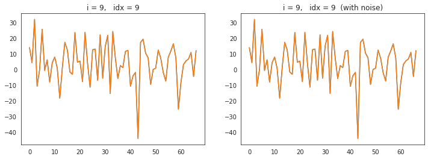
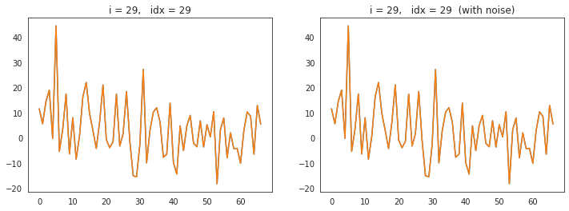
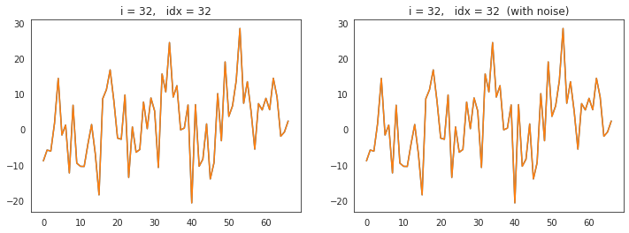
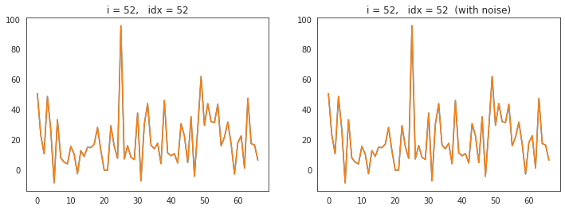
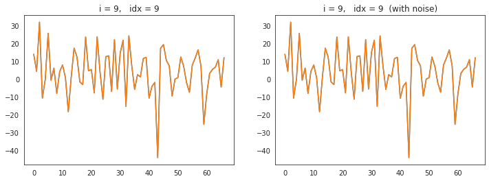
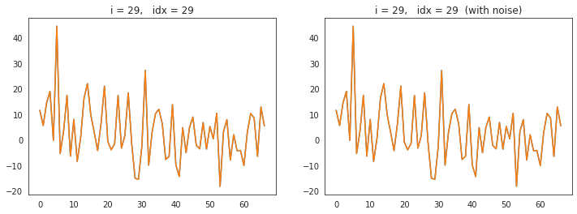
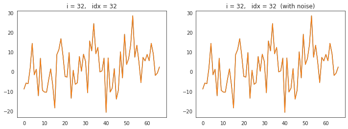
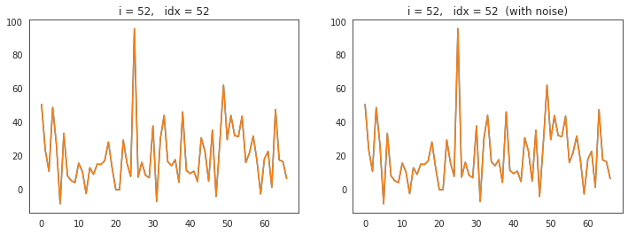

 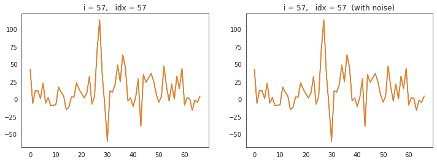
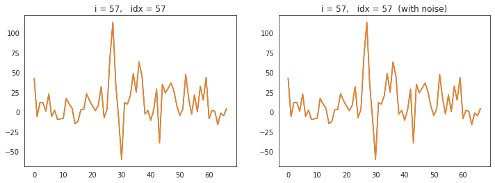
 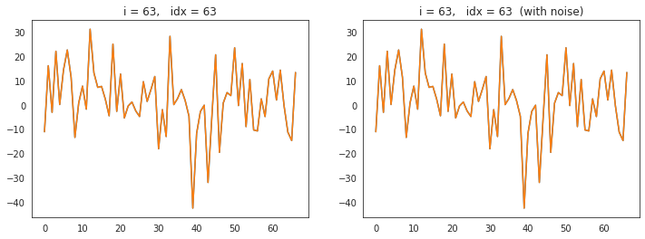
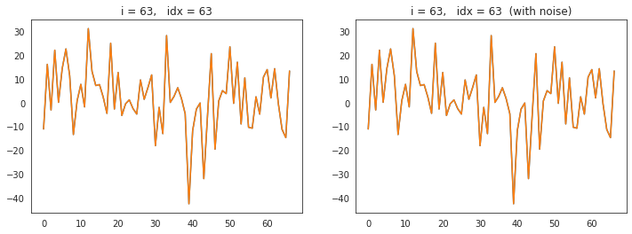


 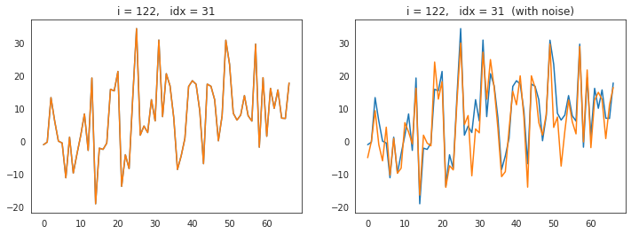
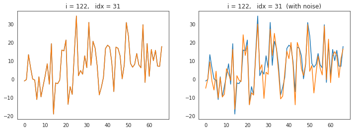

 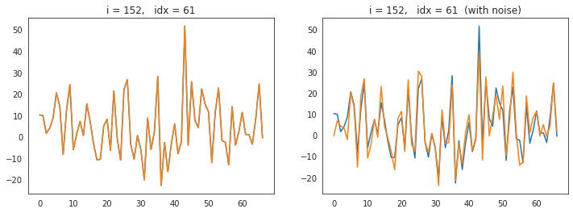
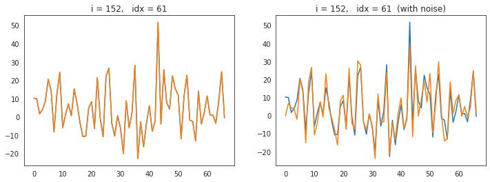

 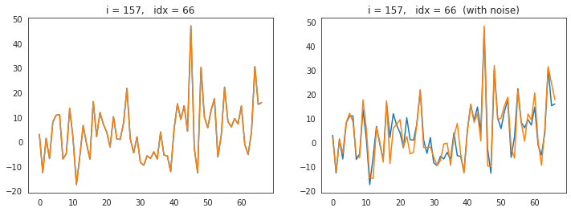
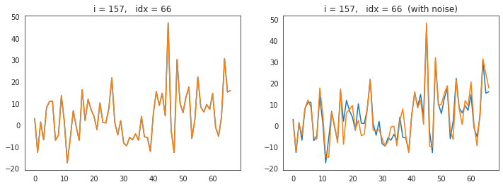
 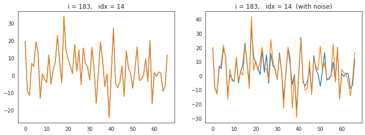
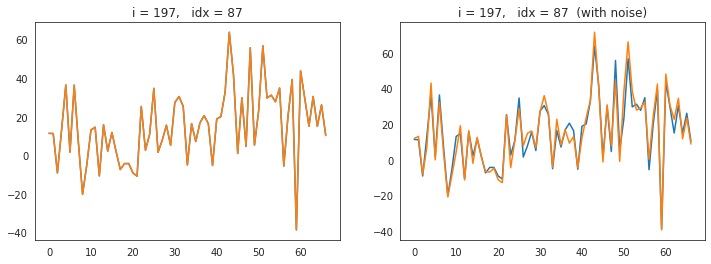
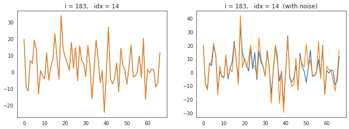
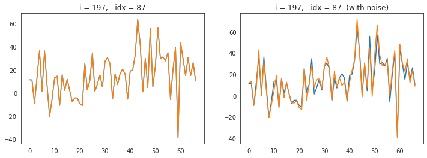
import rcca
from sklearn.linear_model import LogisticRegression
from sklearn.metrics import balanced_accuracy_score, matthews_corrcoef, f1_score
import random
from tqdm.notebook import tqdm
max_components = 60
nb_target_samples = 300
seeds = [np.power(2, i) for i in range(10)]
sigmas = [0.0, 0.3]
results = pd.DataFrame()
for seed in tqdm(seeds):
random.seed(seed)
np.random.seed(seed)
for sigma in sigmas:
aug_train_data = {}
aug_train_labels = {}
for key, x in train_data.items():
y = train_labels[key]
output = augment(x, y, nb_target_samples=nb_target_samples, sigma=sigma, random_state=seed)
aug_train_data[key] = output['x_aug']
aug_train_labels[key] = output['y_aug']
for n_components in tqdm(range(1, max_components), leave=False):
cca = rcca.CCA(reg=1., numCC=n_components, verbose=False)
cca.train(list(aug_train_data.values()))
ev = cca.compute_ev(list(test_data.values()))
x_trn = [x @ w for x, w in zip(train_data.values(), cca.ws)]
x_tst = [x @ w for x, w in zip(test_data.values(), cca.ws)]
y_trn = [item for item in train_labels.values()]
y_tst = [item for item in test_labels.values()]
x_trn, x_tst, y_trn, y_tst = tuple(map(np.concatenate, [x_trn, x_tst, y_trn, y_tst]))
clf = LogisticRegression(
penalty='l1',
C=1.,
solver='liblinear',
max_iter=int(1e6),
random_state=seed,
).fit(x_trn, y_trn)
y_pred = clf.predict(x_tst)
balacc = balanced_accuracy_score(y_tst, y_pred)
f1 = f1_score(y_tst, y_pred)
mcc = matthews_corrcoef(y_tst, y_pred)
data_dict = {
'seed': [seed] * 4,
'sigma': [sigma] * 4,
'n_components': [n_components] * 4,
'metric': ['mcc', 'f1', 'balacc', 'ev'],
'value': [mcc, balacc, f1, np.mean([item.max(0).mean() for item in ev])],
}
results = pd.concat([results, pd.DataFrame.from_dict(data_dict)])
results = reset_df(results)
plt.figure(figsize=(8, 6))
selected_df = results.loc[results.metric == 'mcc']
sns.lineplot(data=selected_df, x='n_components', y='value', hue='sigma',
style='sigma', markers=True, dashes=False, lw=2, markersize=5)
plt.ylabel('%')
plt.grid()
msg = '# PC componens vs. i) percent variance explained, and ii) reconstruction $R^2$ score on test data\n'
msg += 'we see that as few as $6$ dimensions are needed to explain '
msg += 'around $80\%$ of variance and above $70\%$ reconstruction'
plt.suptitle(msg, fontsize=12, y=1.02)
plt.tight_layout()
plt.show()
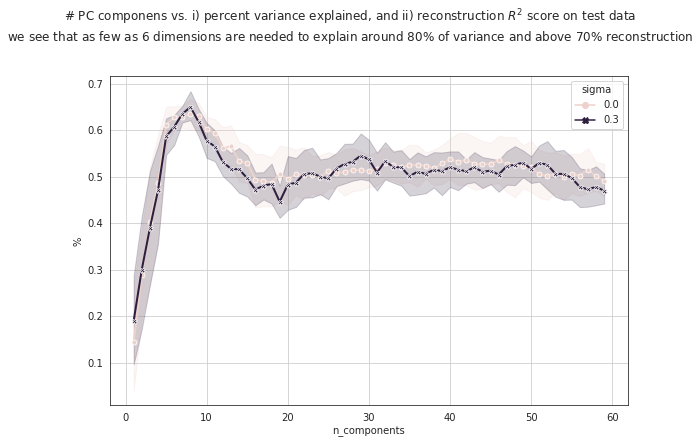
selected_df = results.loc[(results.metric == 'mcc') & (results.sigma == 0.3)]
performance = selected_df.groupby('n_components').mean()
best_n_components = performance.iloc[performance.value.argmax()].name
selected_df = selected_df.loc[selected_df.n_components == best_n_components]
selected_df, selected_df.value.mean()
( seed sigma n_components metric value
264 1 0.3 8 mcc 0.643319
736 2 0.3 8 mcc 0.733504
1208 4 0.3 8 mcc 0.593572
1680 8 0.3 8 mcc 0.674057
2152 16 0.3 8 mcc 0.593572
2624 32 0.3 8 mcc 0.643319
3096 64 0.3 8 mcc 0.656047
3568 128 0.3 8 mcc 0.733504
4040 256 0.3 8 mcc 0.593572
4512 512 0.3 8 mcc 0.635628,
0.6500093111198142)
selected_df = results.loc[results.metric == 'mcc']
performance = selected_df.groupby('n_components').mean()
best_n_components = performance.iloc[performance.value.argmax()].name
selected_df.loc[selected_df.n_components == best_n_components]
| seed | n_components | metric | value | |
|---|---|---|---|---|
| 81 | 1 | 28 | mcc | 0.643319 |
| 258 | 2 | 28 | mcc | 0.635628 |
| 435 | 4 | 28 | mcc | 0.656047 |
| 612 | 8 | 28 | mcc | 0.684117 |
| 789 | 16 | 28 | mcc | 0.674057 |
| 966 | 32 | 28 | mcc | 0.593572 |
| 1143 | 64 | 28 | mcc | 0.604043 |
| 1320 | 128 | 28 | mcc | 0.643319 |
| 1497 | 256 | 28 | mcc | 0.817814 |
| 1674 | 512 | 28 | mcc | 0.684117 |
max_components = 60
nb_target_samples = 300
seeds = [np.power(2, i) for i in range(10)]
results = pd.DataFrame()
for seed in tqdm(seeds):
random.seed(seed)
np.random.seed(seed)
aug_train_data = {}
aug_train_labels = {}
for key, x in tqdm(train_data.items(), leave=False):
y = train_labels[key]
output = augment(x, y, nb_target_samples=nb_target_samples, sigma=0.1, random_state=seed)
aug_train_data[key] = output['x_aug']
aug_train_labels[key] = output['y_aug']
for n_components in tqdm(range(1, max_components), leave=False):
cca = rcca.CCA(reg=1., numCC=n_components, verbose=False)
cca.train(list(aug_train_data.values()))
ev = cca.compute_ev(list(test_data.values()))
x_trn = [x @ w for x, w in zip(train_data.values(), cca.ws)]
x_tst = [x @ w for x, w in zip(test_data.values(), cca.ws)]
y_trn = [item for item in train_labels.values()]
y_tst = [item for item in test_labels.values()]
x_trn, x_tst, y_trn, y_tst = tuple(map(np.concatenate, [x_trn, x_tst, y_trn, y_tst]))
clf = LogisticRegression(
penalty='l1',
C=1.,
solver='liblinear',
max_iter=int(1e6),
random_state=seed,
).fit(x_trn, y_trn)
y_pred = clf.predict(x_tst)
balacc = balanced_accuracy_score(y_tst, y_pred)
mcc = matthews_corrcoef(y_tst, y_pred)
data_dict = {
'seed': [seed] * 3,
'n_components': [n_components] * 3,
'metric': ['mcc', 'balacc', 'ev'],
'value': [mcc, balacc, np.mean([item.max(0).mean() for item in ev])],
}
results = pd.concat([results, pd.DataFrame.from_dict(data_dict)])
results = reset_df(results)
/home/hadi/.local/lib/python3.8/site-packages/sklearn/metrics/_classification.py:870: RuntimeWarning: invalid value encountered in double_scalars
mcc = cov_ytyp / np.sqrt(cov_ytyt * cov_ypyp)
/home/hadi/.local/lib/python3.8/site-packages/sklearn/metrics/_classification.py:870: RuntimeWarning: invalid value encountered in double_scalars
mcc = cov_ytyp / np.sqrt(cov_ytyt * cov_ypyp)
/home/hadi/.local/lib/python3.8/site-packages/sklearn/metrics/_classification.py:870: RuntimeWarning: invalid value encountered in double_scalars
mcc = cov_ytyp / np.sqrt(cov_ytyt * cov_ypyp)
/home/hadi/.local/lib/python3.8/site-packages/sklearn/metrics/_classification.py:870: RuntimeWarning: invalid value encountered in double_scalars
mcc = cov_ytyp / np.sqrt(cov_ytyt * cov_ypyp)
/home/hadi/.local/lib/python3.8/site-packages/sklearn/metrics/_classification.py:870: RuntimeWarning: invalid value encountered in double_scalars
mcc = cov_ytyp / np.sqrt(cov_ytyt * cov_ypyp)
/home/hadi/.local/lib/python3.8/site-packages/sklearn/metrics/_classification.py:870: RuntimeWarning: invalid value encountered in double_scalars
mcc = cov_ytyp / np.sqrt(cov_ytyt * cov_ypyp)
/home/hadi/.local/lib/python3.8/site-packages/sklearn/metrics/_classification.py:870: RuntimeWarning: invalid value encountered in double_scalars
mcc = cov_ytyp / np.sqrt(cov_ytyt * cov_ypyp)
plt.figure(figsize=(8, 6))
sns.lineplot(data=results, x='n_components', y='value', hue='metric',
style='metric', markers=True, dashes=False, lw=2, markersize=5)
plt.ylabel('%')
plt.grid()
msg = '# PC componens vs. i) percent variance explained, and ii) reconstruction $R^2$ score on test data\n'
msg += 'we see that as few as $6$ dimensions are needed to explain '
msg += 'around $80\%$ of variance and above $70\%$ reconstruction'
plt.suptitle(msg, fontsize=12, y=1.02)
plt.tight_layout()
plt.show()
selected_df = results.loc[results.metric == 'mcc']
performance = selected_df.groupby('n_components').mean()
best_n_components = performance.iloc[performance.value.argmax()].name
selected_df.loc[selected_df.n_components == best_n_components]
| seed | n_components | metric | value | |
|---|---|---|---|---|
| 21 | 1 | 8 | mcc | 0.684117 |
| 198 | 2 | 8 | mcc | 0.733504 |
| 375 | 4 | 8 | mcc | 0.643319 |
| 552 | 8 | 8 | mcc | 0.674057 |
| 729 | 16 | 8 | mcc | 0.553134 |
| 906 | 32 | 8 | mcc | 0.593572 |
| 1083 | 64 | 8 | mcc | 0.733504 |
| 1260 | 128 | 8 | mcc | 0.684117 |
| 1437 | 256 | 8 | mcc | 0.553134 |
| 1614 | 512 | 8 | mcc | 0.593572 |
import warnings
warnings.filterwarnings('ignore', category=RuntimeWarning)
max_components = 50
nb_target_samples = 130
seeds = [np.power(2, i) for i in range(10)]
results = pd.DataFrame()
for seed in tqdm(seeds):
random.seed(seed)
np.random.seed(seed)
aug_train_data = {}
aug_train_labels = {}
for key, x in tqdm(train_data.items(), leave=False):
y = train_labels[key]
output = augment(x, y, nb_target_samples=nb_target_samples, sigma=0.0, random_state=seed)
aug_train_data[key] = output['x_aug']
aug_train_labels[key] = output['y_aug']
for n_components in tqdm(range(1, max_components), leave=False):
cca = rcca.CCA(reg=1., numCC=n_components, verbose=False)
cca.train(list(aug_train_data.values()))
ev = cca.compute_ev(list(test_data.values()))
x_trn = [x @ w for x, w in zip(train_data.values(), cca.ws)]
x_tst = [x @ w for x, w in zip(test_data.values(), cca.ws)]
y_trn = [item for item in train_labels.values()]
y_tst = [item for item in test_labels.values()]
x_trn, x_tst, y_trn, y_tst = tuple(map(np.concatenate, [x_trn, x_tst, y_trn, y_tst]))
clf = LogisticRegression(
penalty='l1',
C=1.,
solver='liblinear',
max_iter=int(1e6),
random_state=seed,
).fit(x_trn, y_trn)
y_pred = clf.predict(x_tst)
balacc = balanced_accuracy_score(y_tst, y_pred)
mcc = matthews_corrcoef(y_tst, y_pred)
data_dict = {
'seed': [seed] * 3,
'n_components': [n_components] * 3,
'metric': ['mcc', 'balacc', 'ev'],
'value': [mcc, balacc, np.mean([item.max(0).mean() for item in ev])],
}
results = pd.concat([results, pd.DataFrame.from_dict(data_dict)])
results = reset_df(results)
plt.figure(figsize=(8, 6))
sns.lineplot(data=results, x='n_components', y='value', hue='metric',
style='metric', markers=True, dashes=False, lw=2, markersize=5)
plt.ylabel('%')
plt.grid()
msg = '# PC componens vs. i) percent variance explained, and ii) reconstruction $R^2$ score on test data\n'
msg += 'we see that as few as $6$ dimensions are needed to explain '
msg += 'around $80\%$ of variance and above $70\%$ reconstruction'
plt.suptitle(msg, fontsize=12, y=1.02)
plt.tight_layout()
plt.show()
selected_df = results.loc[results.metric == 'mcc']
performance = selected_df.groupby('n_components').mean()
best_n_components = performance.iloc[performance.value.argmax()].name
selected_df = selected_df.loc[selected_df.n_components == best_n_components]
selected_df, selected_df.value.mean()
( seed n_components metric value
72 1 25 mcc 0.604043
219 2 25 mcc 0.593572
366 4 25 mcc 0.694050
513 8 25 mcc 0.643319
660 16 25 mcc 0.709454
807 32 25 mcc 0.694050
954 64 25 mcc 0.553134
1101 128 25 mcc 0.604043
1248 256 25 mcc 0.643319
1395 512 25 mcc 0.643319,
0.6382304155414514)